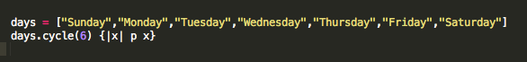
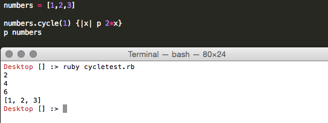
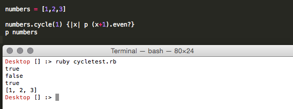

Unit 2, Week 4 Technical Blogpost
Enumerable Methods
Monday January 19, 2015
The enumerable mixins allow different variable classes to be traversed, I think this is especially useful with arrays and hashes that might have a large number of entries. Enumerable methods include sorting, searching and many methods that actually change the elements themselves. Cycle saves elements in an internal array so changes via enumerrables have no effect. We can use the map method to place the cycle results in an array as well.
An example of how to use this might be creating a weekly calendar. We could use the cycle method over the 7 days of the week. So we could create method to print the dates January 19 - February 28 and print the days Sunday through Saturday over the 6 weeks using .cycle like this:

Another example of this might be some type of traverse change without altering the original array. This might be convenient for a variety of different use cases including protecting against accidental, permanent changes to an array you are working with. for example:

In the example above we are able to double the integers in the array usefully, but we do not change the original array. Lets see a more robust example of this:

In this example we added one to each element in the array and then tested if it was even using the .even? method. However when we print the original array we find the elements untouched as promised.
I believe with higher computing power this could be useful with testing datasets for a variety of characteristics. For example we could use cycle to perhaps reduce intensity while testing whether certain very large numbers tranversed in a specific way (e.g. x+1) are prime or meet very specific criteria (e.g. x % 17 == 0). Cycle for me is a clean way to traverse and test specific qualities of elements of an array, whether they are numbers or strings, without changing the original array.